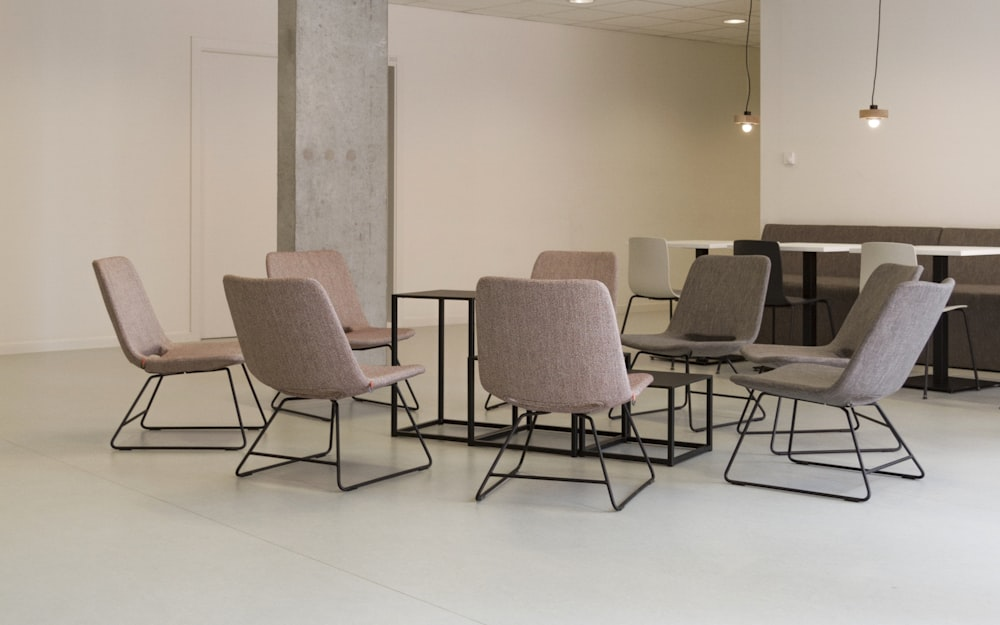

푸른과 함께 하는 인재 · HR 챗봇
첫 출근부터 급여·복지·휴가·사내 규정까지. 궁금한 것은 무엇이든 편하게 물어보세요. HR 챗봇이 24시간 안내해 드립니다.
도움 주제
푸른과 함께 하는 인재가 자주 궁금해하는 주제들을 모았습니다. 아래 주제 외에도 무엇이든 챗봇에게 물어보세요.
첫 출근 준비물, 사내 계정 발급, 오리엔테이션 일정을 안내합니다.
급여일, 4대 보험, 복지 포인트, 경조사 지원 등을 확인하세요.

연차 신청 방법, 근무 시간, 재택근무 규정을 알려드립니다.
취업규칙, 보안 지침, 각종 신청 양식의 위치를 안내합니다.
이용 방법
위 채팅창에 궁금한 내용을 평소 말하듯 편하게 입력합니다.
챗봇이 사내 규정과 자료를 바탕으로 바로 답변해 드립니다.
더 자세한 확인이 필요하면 HR 담당자에게 연결해 드립니다.
문의 · 신청
챗봇으로 해결되지 않은 궁금증이나 필요한 요청(자료·서류·면담 등)을 남겨주시면, HR팀이 확인 후 순서대로 도와드립니다.
불러오는 중...